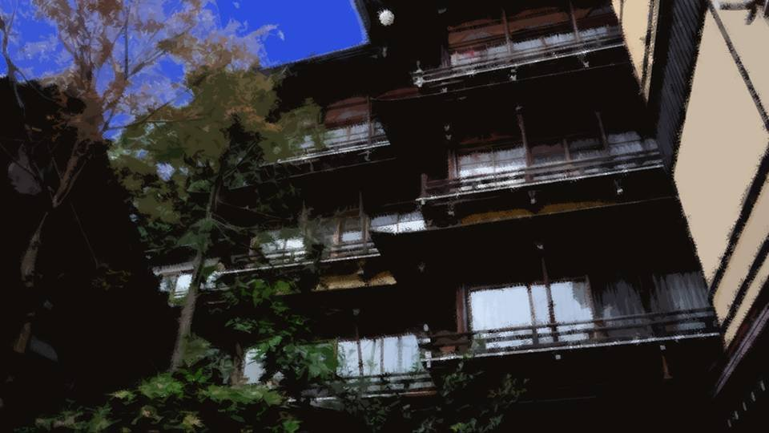
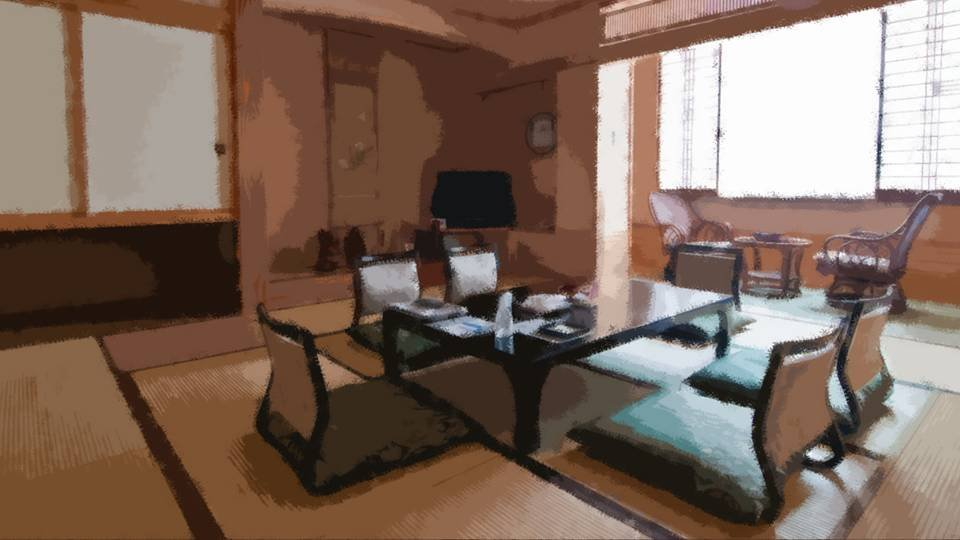
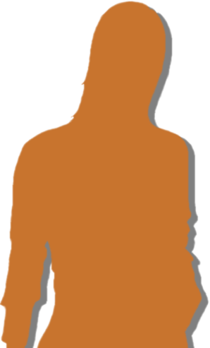
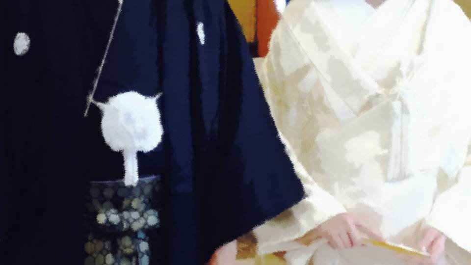
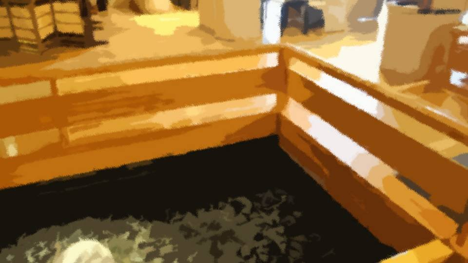
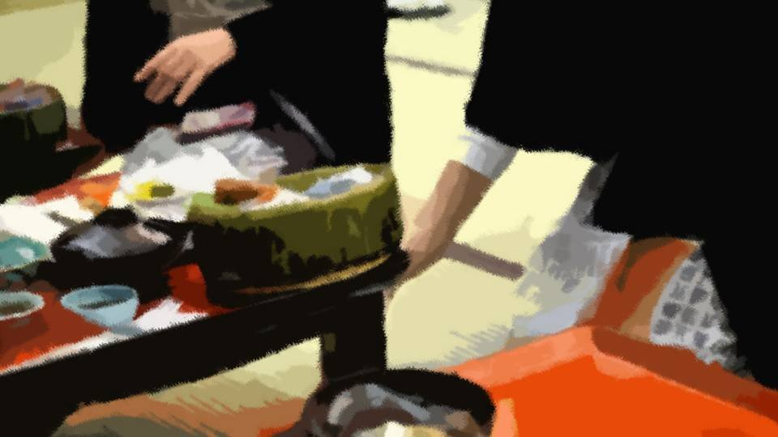
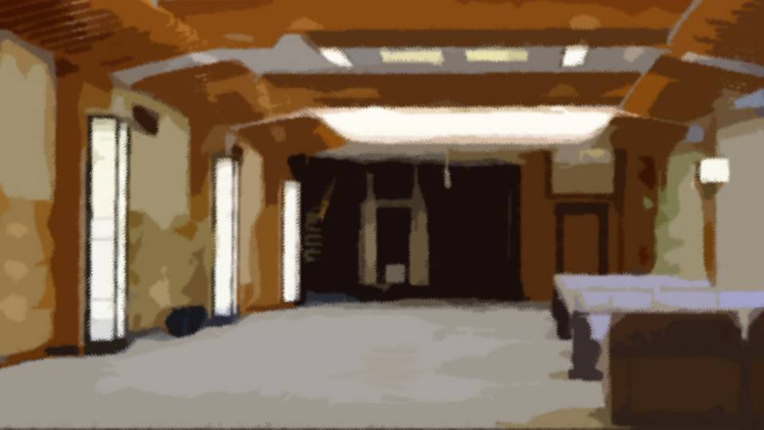
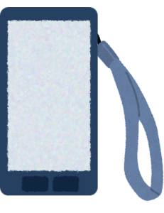
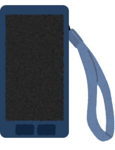

Sisters 2
I felt sick.
It seemed I'd gotten a little carsick.
It seemed I'd gotten a little carsick.

"Haruka, you okay?"
"We're about 10 minutes from the inn, but want me to pull over so you can rest?"
"I'm fine... if it's only about 10 minutes..."
I don't usually get carsick, but I'd been looking at my phone the whole time, and this is what happened.
"We're about 10 minutes from the inn, but want me to pull over so you can rest?"
"I'm fine... if it's only about 10 minutes..."
I don't usually get carsick, but I'd been looking at my phone the whole time, and this is what happened.
Natsumi and I had talked about the eye color that had changed.
After that it kept bugging me, so I'd been studying my own eye closely with my phone's camera, but...
Sure enough, that's an easy way to bring on carsickness.
After that it kept bugging me, so I'd been studying my own eye closely with my phone's camera, but...
Sure enough, that's an easy way to bring on carsickness.

―We made it to the inn safely.
I shouldn't feel any worse than this now.
I got out of the car and breathed in a bellyful of sea wind.
Then, riding that momentum, I blew out all the nasty foul air that had built up in my stomach in one go.
The nausea drained smoothly away, and I could feel the color coming back to my face.
I shouldn't feel any worse than this now.
I got out of the car and breathed in a bellyful of sea wind.
Then, riding that momentum, I blew out all the nasty foul air that had built up in my stomach in one go.
The nausea drained smoothly away, and I could feel the color coming back to my face.
The inn we'd arrived at was a really grand place.
My mom sure splurged...
My mom sure splurged...


"So, what should we do now?
Um... Dad, Mom..."
It was a little awkward after all... Or rather, it felt weird.
Or rather, it felt nothing but weird.
Or rather, it was embarrassing...
It was a little awkward after all... Or rather, it felt weird.
Or rather, it felt nothing but weird.
Or rather, it was embarrassing...
"Oh, calling me 'Mom'... You can keep things the way they've always been, okay?"
"Right, right, same as always."
"Ha, ha ha ha... yeah, you're right! Oh! I'm gonna go explore the inn by myself for a bit!"
"Right, right, same as always."
"Ha, ha ha ha... yeah, you're right! Oh! I'm gonna go explore the inn by myself for a bit!"
I wanted to settle my feelings, so I left the room by myself.
"Haah..."
I'm glad my mom set up a chance like this, but I don't know what to do...
Well, it's not every day I'm at a luxury inn, so I'll have a good look around.
I'm glad my mom set up a chance like this, but I don't know what to do...
Well, it's not every day I'm at a luxury inn, so I'll have a good look around.
I came up to the third floor, where the banquet halls were.
There seemed to be a wedding going on right then.
There seemed to be a wedding going on right then.

In front of a banquet hall with its doors shut, a bride and groom in Japanese dress stood facing the doors.
Were they about to make their entrance?
Were they about to make their entrance?
Behind the bride and groom were two people who looked like the groom's parents, and one who seemed to be the bride's mother.
What had happened to the bride's father?
For a moment I put myself in the bride's place.
I still can't picture it, but will I also find a life partner and see a day like this?
What had happened to the bride's father?
For a moment I put myself in the bride's place.
I still can't picture it, but will I also find a life partner and see a day like this?
My dad and my mom, believe it or not, decided to get married the day after they met, apparently.
My dad may have looked like that, but he sure was quick to make his move.
Geez, your face is joke enough...
I said that in front of my mom once, and I remember her getting genuinely angry.
That was the only time she ever got that angry with me.
My dad may have looked like that, but he sure was quick to make his move.
Geez, your face is joke enough...
I said that in front of my mom once, and I remember her getting genuinely angry.
That was the only time she ever got that angry with me.
Next I came to the second floor, the restaurant floor.

Even though it was indoors, a stream ran along the corridor.
Don't drunk people ever fall in?
If my dad were alive, he'd probably have slipped and fallen in.
Breaking his leg in the middle of a hunt, falling out of a tree and dying... from what I've heard, he was a guy with no end of epic klutz stories.
Don't drunk people ever fall in?
If my dad were alive, he'd probably have slipped and fallen in.
Breaking his leg in the middle of a hunt, falling out of a tree and dying... from what I've heard, he was a guy with no end of epic klutz stories.

It was already past 2 p.m., but every restaurant still had groups enjoying their meals.
More of a banquet than a meal, maybe. Cheerful, rowdy voices echoed all around.
Then, along the corridor, there was a wide tatami seating area, raised up off the floor. The group having a banquet there all stood up at once.
More of a banquet than a meal, maybe. Cheerful, rowdy voices echoed all around.
Then, along the corridor, there was a wide tatami seating area, raised up off the floor. The group having a banquet there all stood up at once.
What were the banzai cheers for?
Old people were doing their best to swing up arms that looked hard to raise.
Well, I get being excited when you come to a luxury inn like this.
Old people were doing their best to swing up arms that looked hard to raise.
Well, I get being excited when you come to a luxury inn like this.
Come to think of it, Chiga-nee was still a bad drunk, same as ever.
What about Natsumi and Goto?
In another 4 and a half years, Goto will turn 20 too.
And then, sure enough, will we have drinking parties too?
What about Natsumi and Goto?
In another 4 and a half years, Goto will turn 20 too.
And then, sure enough, will we have drinking parties too?
Natsumi's dad loves to drink, so that's probably unavoidable.
My prediction is that the worst drunk will probably be Natsumi.
Goto will probably be a crying drunk?
My prediction is that the worst drunk will probably be Natsumi.
Goto will probably be a crying drunk?
Well, that's about it for this banquet floor... I mean, restaurant floor.
The fourth floor and up are guest rooms, so I can't really wander around there, which leaves the first floor.
The fourth floor and up are guest rooms, so I can't really wander around there, which leaves the first floor.

―I sat down on a sofa in the first-floor lobby.
Big inn or not, 15 minutes was enough to see most of it.
I could check out the souvenir shop, but that could just as well wait until tomorrow.
Big inn or not, 15 minutes was enough to see most of it.
I could check out the souvenir shop, but that could just as well wait until tomorrow.
Come to think of it, what was Goto up to?
At the amusement park with her family by now?
It might be a bother, but maybe I'll give her a call just to tease her...
At the amusement park with her family by now?
It might be a bother, but maybe I'll give her a call just to tease her...

No answer...
If she's somewhere noisy like an amusement park, she might not notice...
If she's somewhere noisy like an amusement park, she might not notice...

Aw, man... what do I do now...
It's not like I dislike Natsumi's parents...
It's not like I dislike Natsumi's parents...
"Sorry, but frankly, the mood here is awkward!"
Even if I said something like that, they'd probably forgive me, but...
Aw, man... what do I do?
Even if I said something like that, they'd probably forgive me, but...
Aw, man... what do I do?
Whoa, it's Goto-chan, right on cue.
She went to the trouble of calling me back.
She went to the trouble of calling me back.
"Yeah, hellooo?"
"Hiii! It's your Goto-chan!"
"Hiii! It's your Goto-chan!"
"How's it going over there? You at the amusement park yet?"
"Almost! We just got off the expressway. Senpai, what about you? Aren't you with Kogori-senpai?"
"Almost! We just got off the expressway. Senpai, what about you? Aren't you with Kogori-senpai?"
"Nah, it's... how do I put it..."
"So it's awkward with the Kogori parents after all?"
"So it's awkward with the Kogori parents after all?"
"Well, yeah... I just don't know how to act around them..."
"Figures. In a situation like that, even this genius girl would be stumped..."
"Figures. In a situation like that, even this genius girl would be stumped..."
"Being a genius has nothing to do with it...
Anyway, that's how it is, so right now I'm in the inn lobby by myself.
It's just no use..."
"With that kind of thing, isn't it fine to just keep things the way they've always been? There's no need to change all of a sudden. Don't you think you'll naturally settle in?"
"With that kind of thing, isn't it fine to just keep things the way they've always been? There's no need to change all of a sudden. Don't you think you'll naturally settle in?"
"I know that, but...
When my mom went out of her way to set this up, having nothing change at all is kinda..."
"Like I said, I get how you feel, but I think forcing yourself like that is exactly what's no good. Kogori-senpai's family and you, having a fun time together―isn't that enough? That'll be the best story to bring home."
"Like I said, I get how you feel, but I think forcing yourself like that is exactly what's no good. Kogori-senpai's family and you, having a fun time together―isn't that enough? That'll be the best story to bring home."
"Ahh, I see...
Just enjoy things however I like, and if I can tell my mom about it, that's enough...
Yeah, you're right about that!
Got it! I'll head back to the room. Sorry for bugging you on your trip."
"No, no, it's me and you, right? Please don't be such a stranger!"
I had a feeling Goto had her hands on her hips on the other end of the line.
"No, no, it's me and you, right? Please don't be such a stranger!"
I had a feeling Goto had her hands on her hips on the other end of the line.
"Then once I get to the amusement park, I'll show off over a video call!
I'll show you some super amazing rides!"
"Hahaha, I'll look forward to it! Okay, you have fun over there too!"
"Okay!"
"Hahaha, I'll look forward to it! Okay, you have fun over there too!"
"Okay!"
When it counts, Goto really is reliable.
It's simple, but: stay natural, the way I always have been.
It's simple, but: stay natural, the way I always have been.
I got on the elevator to go back to our room's floor.
"Um...
Huh? Which floor was it...?"
Shoot...! I forgot which floor our room's on...
Maybe I'll try calling Natsumi.
Shoot...! I forgot which floor our room's on...
Maybe I'll try calling Natsumi.
No answer...
Asking Natsumi's parents would be a little lame, so I'll ask at the front desk.
Asking Natsumi's parents would be a little lame, so I'll ask at the front desk.
"Excuse me, I'm Niimura...
no, Kogori, but which room was mine again...?"
"Yes, Kogori-sama. Kogori-sama is―"
"Yes, Kogori-sama. Kogori-sama is―"

"Haruka, you're lost too?"
Natsumi's face suddenly loomed in from the side.
"Na-na-Natsumi!? Ah, no, well, yeah."
But Natsumi asking, "Haruka, you're lost too?" means...
Natsumi's face suddenly loomed in from the side.
"Na-na-Natsumi!? Ah, no, well, yeah."
But Natsumi asking, "Haruka, you're lost too?" means...
"So, what about you?"
"Me? Um, well, I was out looking for you, and..."
Natsumi's cheeks went pink with embarrassment.
"Me? Um, well, I was out looking for you, and..."
Natsumi's cheeks went pink with embarrassment.
"Ah-hah. I know what's up! You got lost too, didn't you?"
"Huh!? Oh, yeah, that's... right..."
We laughed together a little.
"Huh!? Oh, yeah, that's... right..."
We laughed together a little.
"Natsumi, wanna take a little walk outside? The sea's close, and the weather's nice."
We talked on a stretch of shore that looked down over the sea, Natsumi and I.
About 10 years ago, about us.
About what we should do to build happiness.
It was a relief that our thinking didn't seem to differ much.
About 10 years ago, about us.
About what we should do to build happiness.
It was a relief that our thinking didn't seem to differ much.
If Natsumi is ever about to make a mistake, I'll stop her with everything I've got.
And if I'm about to make one, I'll have Natsumi stop me with everything she's got.
With the two of us, we'll be fine.
And if I'm about to make one, I'll have Natsumi stop me with everything she's got.
With the two of us, we'll be fine.
But,
"Natsumi, what's wrong? You've got a scary look on your face..."
For a while now, Natsumi had been wearing a scary look.
And she started staring hard at my upper body.
From top to bottom, and then from bottom to top.
Thoroughly, as if devouring me with her eyes.
"Natsumi, what's wrong? You've got a scary look on your face..."
For a while now, Natsumi had been wearing a scary look.
And she started staring hard at my upper body.
From top to bottom, and then from bottom to top.
Thoroughly, as if devouring me with her eyes.
"Alright, Haruka, you pass! Our room has its own family bath, so let us go and savor it forthwith!"
"Huh? Pass...? What's passing got to do with the family bath? The other day at Grandma's house, we took a bath together, didn't we?"
"Huh? Pass...? What's passing got to do with the family bath? The other day at Grandma's house, we took a bath together, didn't we?"
"Huh? Did we?"
"You know, it was after you got from Grandma that branch of Shirozaki-san's. Don't you remember?"
"You know, it was after you got from Grandma that branch of Shirozaki-san's. Don't you remember?"
"Hmm, sorry, I don't remember...
Back then, I checked Goto's, though...
There was just so much on our minds..."
Something to do with baths... what about me or Goto was there to check?
I had a feeling Natsumi's eyes were a little full of ulterior motives...
I had a feeling Natsumi's eyes were a little full of ulterior motives...
Read ✓ Next in this arc →